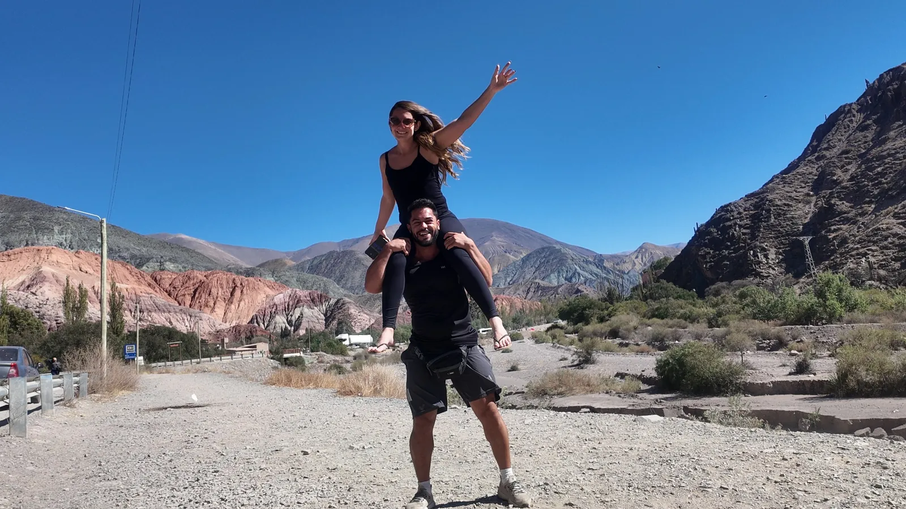

Roteiros de viagem de carro pela Argentina, Chile e Brasil, contados por quem fez.
Roteiros parada por parada, dicas de fronteira e vídeos de cada viagem. Tudo o que a gente queria ter lido antes de pegar a estrada.
Para onde ir neste fim de semana?
Escolha de onde você sai e o QuickTrip monta o fim de semana: destino, passeios, hospedagem e custo de combustível. Por enquanto, saindo de Rio Preto e região.
Posts recentes

Cerro Toco: como foi tentar subir a pé um vulcão de 5.604 m
O carro 4x2 não subiu, seguimos a pé e voltamos a uns 400 m do cume. Altitude, frio, AllTrails e dicas.
Ler →
Geysers del Tatio: como é o passeio mais frio do Atacama
Saída de madrugada, -14°C no dia em que fomos e gêiseres a mais de 4.300 m. O que levar e como se preparar.
Ler →
Seguro viagem para Argentina e Chile: é obrigatório?
O que mudou na Argentina, o que vale para o Chile e o que conferir antes de contratar para uma viagem de carro.
Ler →Aperte o play e viaje com a gente
Por onde já passamos
Cada país tem uma página com os lugares, roteiros e vídeos daquela viagem.

Chile
- San Pedro de Atacama
- Valle de la Luna
- Geysers del Tatio
- Cerro Toco
- Valle de la Muerte

Argentina
- Salta e Cafayate
- Purmamarca e Jujuy
- Salinas Grandes
- Roteiro até o Atacama
- Documentos para entrar de carro

Brasil
- Foz do Iguaçu (PR)
- Morro do Fogão, Itirapina (SP)
- Serra Negra e Águas de São Pedro (SP)
- Lagoa Santa (GO)
O que a gente usa e indica
Viaje com mais tranquilidade
A Argentina passou a exigir seguro saúde de turistas. Use nosso cupom na Real Seguro Viagem.
Achadinhos que a gente usa na estrada
Itens de carro, camping e viagem que levamos nas nossas viagens, todos num lugar só.

Foz do Iguaçu em 1 dia: Itaipu + Cataratas
PDF de 8 páginas com a ordem dos passeios, gastos, horários e checklist.
Vamos mostrar o seu lugar para quem viaja de carro?
Vídeos no YouTube, Reels, TikTok e guias aqui no site, com filmagens de drone. A gente vai, vive a experiência e conta do nosso jeito.

Sobre o Estrada em Dois
A gente é a Andressa e o Guilherme. Viajamos de carro pelo Brasil, Argentina e Chile e contamos tudo: as paisagens, os quilômetros rodados e os perrengues que ninguém conta.
Cada destino sai primeiro no YouTube e no Instagram. Vem com a gente. Conheça a nossa história →
É uma marca, pousada ou passeio? Conheça nossas parcerias →